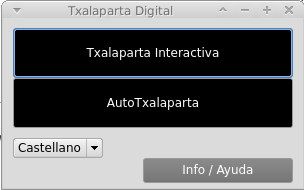
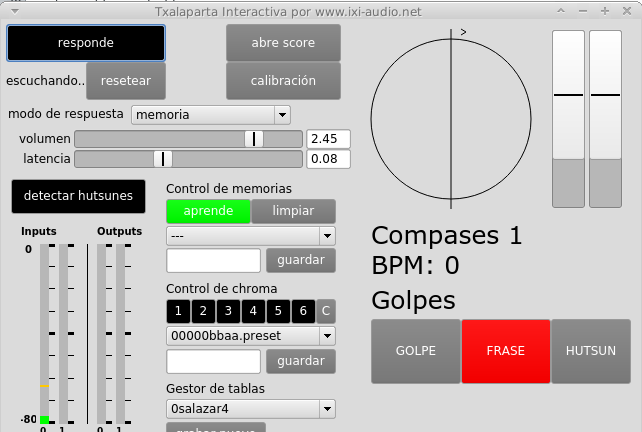
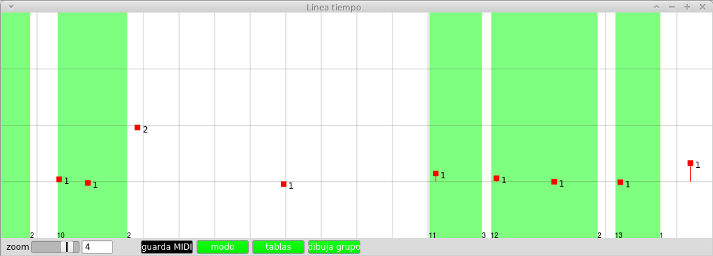
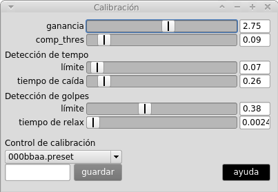

2017-05 alpha
Euskera | Castellano
La Txalaparta Digital es un programa que explora los ritmos de txalaparta traduciéndolos a un sistema digital. Inicialmente fue desarrollado
como parte de la tesis doctoral de Enrike Hurtado (www.ixi-audio.net/txalaparta)
La Txalaparta Digital consta de dos partes diferentes:
- Txalaparta interactiva
- Autotxalaparta
Demos describiendo la Txalaparta interactiva:
Demo general
https://youtu.be/pmcTa1M2KVQ?list=PLauBVgFtMcLAdB0HnCBA1hSvtiV8IRgCi
Demo del sistema de detección de tablas (Chroma)
https://youtu.be/Ji1qTiHRBKU?list=PLauBVgFtMcLAdB0HnCBA1hSvtiV8IRgCi
(Si no sabes qué es la txalaparta
https://en.wikipedia.org/wiki/Txalaparta
https://www.youtube.com/playlist?list=PLauBVgFtMcLDCSNNLCngm0BtBas2SsFB7 )
Contenido:
- Autotxalaparta
- Txalaparta Interactiva
- Cómo funciona
- Modo de respuesta y Memoria
- Gestión de memorias
- Control de Chroma
- Calibración rítmica
- Gestor de tablas
- Detección de hutsunes
- Corrección de latencia
- Introducir los sonidos de tus tablas a mano (grabándolos por tu cuenta)
- Notas para usuarios de Windows
- Notas para usuarios de Mac
++ Autotxalaparta ++
Este programa genera las dos partes del ritmo de txalaparta automáticamente. Sus características pueden ser controladas
desde el interfaz de control. Puedes apagar la parte de uno de los intérpretes (txakun o errena) y tocar una txalaparta siguiendo
al ordenador, pero no te escucha ni se adapta a lo que haces.

++ Txalaparta Interactiva ++
Escucha el toque de txalaparta de un solo intérprete de txalaparta mediante el micrófono y responde con la parte del segundo
intérprete con patrones que aprende a partir de lo que que escucha. Por esto necesitas un micrófono conectado a tu ordenador
(en portatiles puede valer el que llevan incorporado).

+ Cómo funciona:
Conecta el micrófono y en las preferencias del sistema de tu ordenador asigna la entrada de audio para que grabe desde el
micrófono. Si todo es correcto deberías de ver en el programa en el control INPUTS cómo el volumen sube si golpeas o hablas
en el micrófono. La señal tiene que ser fuerte y llegar casi hasta arriba del control INPUTS pero sin llegar a ponerse rojo. Al golpear la txalaparta
tienes que ver en la parte derecha del programa que los indicadores GOLPE y FRASE parpadean cuando los golpes son detectados. También verás el
número de golpes de cada frase, el número de vueltas (compases) y el tempo (BPM). Si abres
el Score con el botón ABRE SCORE puedes ver una representación de los que estás tocando más detallada. Comprueba en el
score que lo que el ordenador muestra corresponde con lo que tocas. Si todo es correcto pulsa el botón RESPONDER y en
un par de vueltas el ordenador comenzará a responder a tu toque. En el interfaz tus golpes están marcados en rojo y los
del ordenador en azul.

+ Modo de respuesta y Memoria:
El programa aprende de lo que escucha y memoriza los patrones que tocas. El modo de respuesta ofrece diferentes niveles de
aprendizaje (Imitación, Memoria, Memoria 1 compás y Memoria 2 compases). Imitación simplemente intenta repetir exactamente lo que tu tocas,
Memoria recuerda las secuencias que tocas y usa las combinaciones que más se repiten, cuanto más larga es la secuencia que memoriza,
más compleja es la respuesta, pero también tarda más tiempo en aprender. Además el programa te
responde usando frases que tu has tocado y que ha ido almacenado en la memoria, esto produce respuestas más "humanas".
+ Gestión de memorias:
El sistema de gestión de memorias permite guardar las memorias en archivos de texto para ser reutilizadas posteriormente. Ten en
cuenta que en cada modo de respuesta solo puedes cargar memorias creadas en ese mismo modo. Esto permite "entrenar" al
programa en un cierto tipo de toque y guardar la memoria (por ejemplo txalaparta zaharra), para posteriormente desactivar el botón
"aprender" y cargar esa memoria que hemos guardado. El programa debería responder en estilo txalaparta zaharra pero tu
puedes tocar en el estilo que quieras sin que el programa aprenda de lo que estás tocando ahora.
+ Control de Chroma:
Es un sistema de calibración tímbrica para poder distinguir cada una de las tablas por su sonido ("Control de chroma").
Para configurarlo con tu txalaparta, aprieta primero en botón "C" para resetear el sistema de chroma. Ahora aprieta el
botón 1 (se pone en rojo), entonces golpea en la primera tabla (el botón vuelve a ser negro tras el golpe). Repite esto con cada
número y tabla (2,3,4...). Intenta que el golpe sea en una zona representativa del sonido de toda la tabla. Si aun así el programa
confunde dos tablas prueba a repetir el proceso con las tablas que confunde. Las memorias tímbricas de chroma pueden
guardarse en un archivo de texto para poder cargar la configuración txalapartas diferentes.
+ Calibración rítmica:
La calibración rítmica es compleja y normalmente no hay que tocar casi ningún parámetro. En caso de tocar ritmos con ttakun
abierto (tipo lauko) es conveniente aumentar el valor del "tiempo" de Detección de tempo para que entienda que los
golpes van a agrupados. Si tocas con ttakun cerrado (tradicional) es mejor bajar ese valor de nuevo porque permite tocar
con tempos más rápidos sin errores.
La mejor forma de comprobar que las calibraciones son correctas es activar el modo de Imitación en el menu "Modo de respuesta". Si el programa responde exactamente lo mismo que tocamos, entonces la calibración es correcta.

+ Gestor de tablas:
(Aviso: Experimental, no siempre funciona bien)
La txalaparta interactiva usa un sistema de samples (grabaciones de audio) con varios sonidos por cada tabla de txalaparta
(hasta seis tablas) para producir un resultado más rico y realista. Si solo hubiera un sonido el resultado sería más mecánico.
Para esto el programa divide cada tabla en cinco zonas (ABCDE) y dentro de cada zona puede haber varios sonidos normalmente con
diferentes amplitudes incrementando de amplitud (0 sería el más bajo y 5 el más alto).
Los sonidos se agrupan por tablas, zonas dentro de esa tabla, y finalmente en cada zona hay varios golpes normalmente de
diferentes amplitudes. Si miras dentro del programa puedes ver como están organizados y escucharlos. Son simplemente archivos
wav con un golpe de txalaparta cada uno.
El Gestor de tablas con el botón GRABAR NUEVO permite introducir sonidos de las tablas de cualquier txalaparta. Aparte también
podríamos grabar los sonidos con cualquier programa de grabación como Audacity o Audition, o incluso con una grabadora tipo Zoom,
y posteriormente colocar los sonidos dentro del programa, explicamos esta técnica a continuación.
Para grabar los sonidos de una zona de una tabla abrimos el programa de grabación con el botón GRABAR NUEVO. Se abre una ventana
con varios botones por cada tabla. Si pulsamos el botón 1A esto corresponde a la primera zona dentro de la primera tabla. Si lo
pulsamos se pone en rojo y a partir de ese momento tenemos 10 segundos para golpear la zona uno (la que queramos, yo suelo empezar
por el exterior y acabar en el centro de la tabla) de la primera tabla. Al acabar los 10 segundos el programa detecta los golpes,
los corta, normaliza y guarda con el nombre adecuado en la carpeta sounds. Los golpes tienen que ser claros y hay que dejar espacio
para que la cola del sonido no se junte con el siguiente golpe. De lo contrario el programa puede equivocarse al cortar los sonidos.
Repite esta operación para cada zona de cada tabla. No hace falta que uses todas las zonas de cada tabla. El mínimo es un sonido en
una zona de cada tabla, pero recuerda que cuantos más sonidos metas más rico sera el resultado a nivel tímbrico.
Este sistema de grabación no siempre funciona bien y a veces es necesario grabar los sonidos en otro programa (Audacity, Audition ...)
e introducirlos a mano en la Txalaparta Interactiva y la Autotxalaparta, como explicamos a continuación.
+ Detección de hutsunes:
Pulsa este botón si vas a hacer hutsunes. Ten en cuenta que la detección de hutsunes es problemática y que a veces se equivoca.
+ Corrección de latencia:
El botón "Latencia" sirve para corregir la latencia que el sistema operativo y el programa al analizar el sonido genera. La latencia
es tiempo que tarda el ordenador en procesar el audio. Por culpa de la latencia el ordenador siempre lleva un pequeño retraso,
que a veces no es tan pequeño. Cuando notes que el ordenador se retrasa sistemáticamente en sus respuestas cambia este valor
hasta que vaya a tiempo.
+ Introducir los sonidos de tus tablas a mano (grabándolas por tu cuenta)
Los sonidos están dentro de la carpeta /sounds dentro de cada programa. En Windows esto es dentro de
- /Extensions/txalaparta-master/interactive_txalaparta/sounds
- /Extensions/txalaparta-master/autotxalaparta/sounds
en OSX están dentro del programa en
- Contents/Resources/SCClassLibrary/txalaparta-master/interactive_txalaparta/sounds
- Contents/Resources/SCClassLibrary/txalaparta-master/autotxalaparta/sounds
En OSX para acceder a esas carpetas tenemos que hacer click derecho sobre el programa y en el menú elegir “mostrar contenidos del paquete”
Los sonidos se agrupan por tablas, zonas y finalmente amplitudes. Esto se consigue gracias a un sistema de nombres de archivo.
Los archivos se llaman plank000.wav, plank001.wav, etc...
Todos los archivos que empiezan por plank0 pertenecen a la primera tabla, plank1 a la segunda tabla y así sucesivamente, dentro de
la primera tabla los que empiezan por plank00 pertenecen al primer área de esa tabla, los que empiezan por plank01 a la segunda zona, etc...
Por ejemplo el archivo plank132.wav pertenece a la segunda tabla, en la cuarta zona y es el tercer archivo de esa zona.
Si grabas sonidos de tu txalaparta, solo tienes que seguir esa forma de nombrarlos para que funcione. Crea una carpeta dentro de /sounds
con el nombre que quieras y allí metes los sonidos
primera tabla / primera zona: plank000.wav, plank001.wav...
primera tabla / segunda zona: plank010.wav, plank011.wav...
etc...
segunda tabla / primera zona: plank100.wav, plank101.wav...
segunda tabla / segunda zona: plank110.wav, plank111.wav...
etc...
así hasta cubrir un máximo de seis tablas y diez zonas (de 0 a 9). Idealmente los sonidos de cada zona van de menos a más volumen. El programa entiende que plank000.wav es un golpe más suave que plank001.wav y que los golpes son más intensos según sube el último número del nombre. A la hora de responder el programa analiza tu toque y elige el sonido con el que responder dependiendo de la intensidad con la que estés tocando.
+ Notas para usuarios de Windows:
Al ejecutar por primera vez la Txalaparta Digital en Windows el sistema pide permiso para que los procesos scsynth y sclang se
comuniquen por red. Esto es normal y hay que darle permiso para poder hacerlo, de lo contrario el programa no puede producir sonido.
Si el programa no tiene sonido o tiene un comportamiento raro hay que mirar si el motor de sonido esta funcionando y que solo haya
una copia en marcha. Para hacer esto abrimos el gestor de procesos de Windows con CONTROL+ALT+DELETE, y buscamos el proceso llamado
scsynth.exe para apagarlo. A veces si el programa ha tenido algún problema el motor de sonido se queda en marcha y al volver a abrir
el programa no funciona correctamente porque hay más de una copia o porque la que hay no funciona bien.
+ Notas para usuarios de Mac:
Al abrir el programa aparecen dos iconos. Al cerrar el programa hay que cerrar los dos iconos. Si cierras el principal (el de color naranja y blanco)
el otro se cierra también.